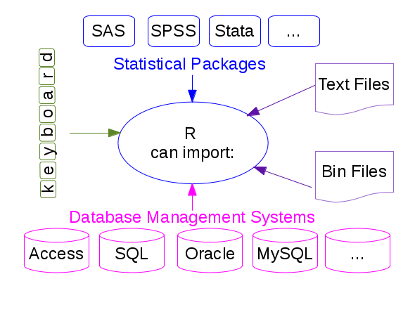

Data Reading and Writting
You can import data in R in many different formats!
{kind=link}
ASCII data files
The main functions used in R to import data from ASCII files are read.table
and read.csv to read data in a tabular form, and readLines to read
lines from a text file. The only difference between read.table and
read.csv is that in the later the default separator is a comma. The
analogous functions to write data to a text file are called write.table,
write.csv, writeLines,…
Let’s have a file named galaxies.dat, which contains:
GALAXY morf T_RC3 U-B B-V
NGC1357 Sab 2 0.25 0.87
NGC1832 Sb 4 -0.01 0.63
NGC2276 Sc 5 -0.09 0.52
NGC3245 S0 -2 0.47 0.91
NGC3379 E -5 0.53 0.96
NGC1234 Sab 3 -0.56 0.84
NGC5678 E -4 0.45 0.92
This file can be read as follows:
> gal <- read.table("galaxies.dat",header=TRUE)
where the instruction header=TRUE specifies that the first line in the file
does not contain data but it is a label identifying the contents of every
column.
> gal # show content of data file
GALAXY morf T_RC3 U.B B.V # 'U-B' and 'B-V' labels have changed!
1 NGC1357 Sab 2 0.25 0.87
2 NGC1832 Sb 4 -0.01 0.63
3 NGC2276 Sc 5 -0.09 0.52
4 NGC3245 S0 -2 0.47 0.91
5 NGC3379 E -5 0.53 0.96
6 NGC1234 Sab 3 -0.56 0.84
7 NGC5678 E -4 0.45 0.92
The data file is read as a data frame (i.e. a list):
> class(gal)
[1] "data.frame"
> names(gal)
[1] "GALAXY" "morf" "T_RC3" "U.B" "B.V"
> gal$morf
[1] "Sab" "Sb" "Sc" "S0" "E"
> tapply(gal$U.B, gal$morf, mean) # calculate mean colours for every morph. type
E S0 Sab Sb Sc
0.490 0.470 -0.155 -0.010 -0.090
The names of the different fields can be directly accessed (without lists name specification) using their names:
> attach(gal) # direct access to the list elements
> morf # (it is no longer necessary to use gal$morf,...)
[1] Sab Sb Sc S0 E
Levels: E S0 Sab Sb Sc
> detach(gal) # remove direct access
If the data file only contains numbers, information can also be read and
assigned to a matrix instead of storing it in a data frame. As an example, if
we want to read the file numbers.dat with 3 columns:
> a <- matrix(data=scan("numbers.dat",0), ncol=3, byrow=TRUE)
Read 36 items
> a
[,1] [,2] [,3]
[1,] 2 0.25 0.87
[2,] 4 -0.01 0.63
[3,] 5 -0.09 0.52
[4,] -2 0.47 0.91
[5,] -5 0.53 0.96
[6,] 1 0.45 0.92
[7,] 3 0.20 0.73
[8,] -3 0.51 0.94
[9,] -5 0.55 0.96
[10,] 10 -0.22 0.39
[11,] -1 0.38 0.85
[12,] 5 -0.03 0.63
If the number of columns is not specified through ncol, all the elements are stored into a one dimensional array:
> a1 <- matrix(data=scan("numbers.dat",0))
Read 36 items
> a1
[,1]
[1,] 2.00
[2,] 0.25
[3,] 0.87
[4,] 4.00
[5,] -0.01
[6,] 0.63
[7,] 5.00
[8,] -0.09
[9,] 0.52
. .
. .
. .
[28,] 10.00
[29,] -0.22
[30,] 0.39
[31,] -1.00
[32,] 0.38
[33,] 0.85
[34,] 5.00
[35,] -0.03
[36,] 0.63
If byrow=TRUE is omitted the element assignment does not preserve the
columns information:
> a2 <- matrix(data=scan("numbers.dat",0), ncol=3)
Read 36 items
> a2
[,1] [,2] [,3]
[1,] 2.00 -5.00 -5.00
[2,] 0.25 0.53 0.55
[3,] 0.87 0.96 0.96
[4,] 4.00 1.00 10.00
[5,] -0.01 0.45 -0.22
[6,] 0.63 0.92 0.39
[7,] 5.00 3.00 -1.00
[8,] -0.09 0.20 0.38
[9,] 0.52 0.73 0.85
[10,] -2.00 -3.00 5.00
[11,] 0.47 0.51 -0.03
[12,] 0.91 0.94 0.63
Note
Reading large datafiles requires a careful setting of the read.table parameters. Specifying the “colClasses” argument can make the data reading twice as fast while setting the “nrows” argument helps with the memory usage.
R Example Data
R contains a lot of example data. All the functions and data blocks are stored in packages.
The list of packages currently installed in R can be seen with:
To gather information about a specific package:
And to load a package and be able to use its functionality:
> library(splines) # load 'splines' package
We can check the data lists that are currently available:
And those that are available in a given package:
One of the strongest points in R is that new packages are continuously being generated, including new functionalities. To install a new package:
Once installed we can use it:
> library(car) # load in memory the functionality defined in 'car'
> data(package="cluster")
Data sets in package ’car’:
AMSsurvey American Math Society Survey Data
Adler Experimenter Expectations
...